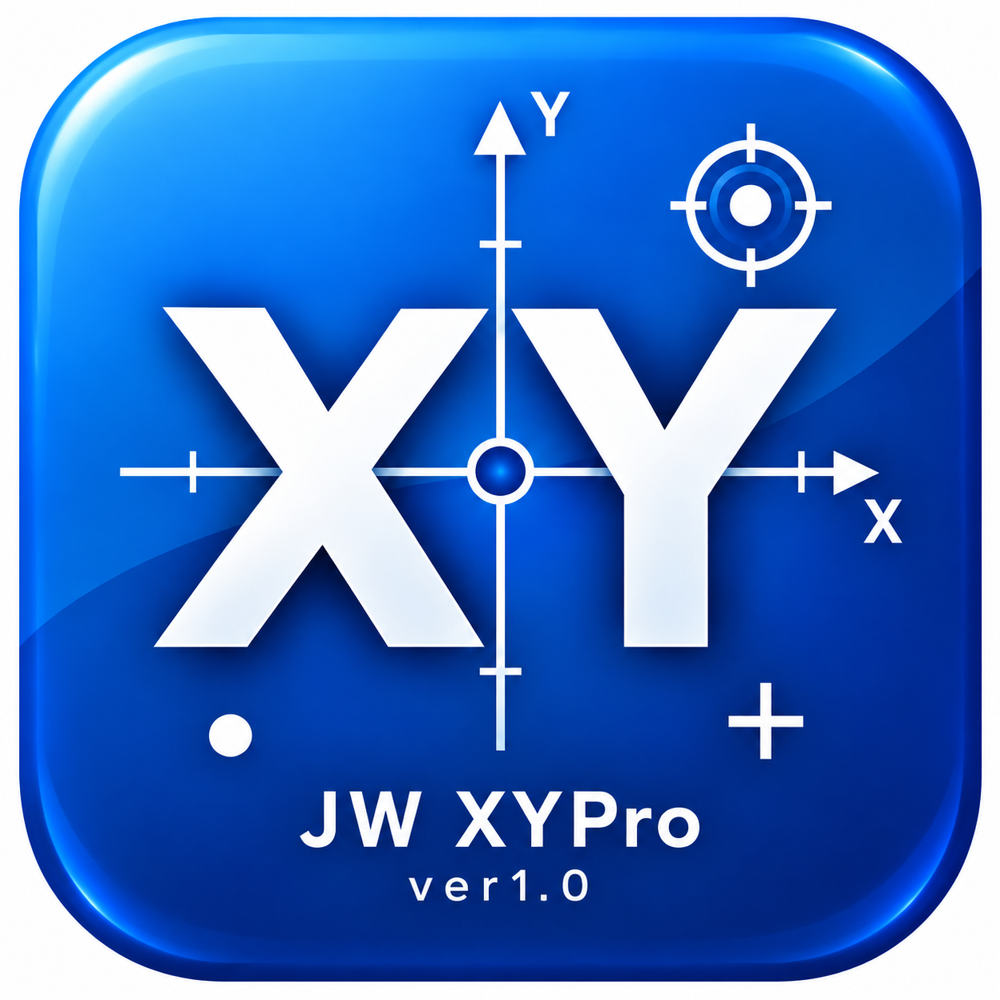

JW XYPro
測量座標をJw_cadへ かんたんに作図できるWindows用ツールです。
ソフト概要
JW XYProは、 点名・X座標・Y座標を入力して Jw_cadへ測点や点名を作図するための 外部変形ツールです。
主な機能
・点名 / X座標 / Y座標の入力
・Excel等からの貼り付け
・TXT / CSV / SIMAの読込・保存
・Jw_cadへの測点・点名作図
・座標オフセット
・測点記号 / サイズ / 色の設定
動作環境
・Windows 10 / 11 64bit
・Jw_cad
ダウンロード
JW XYPro ver1.0はこちらからダウンロードできます。
JW XYPro ver1.0をダウンロードリリース情報を見る
← UG/CORPOトップへ戻る